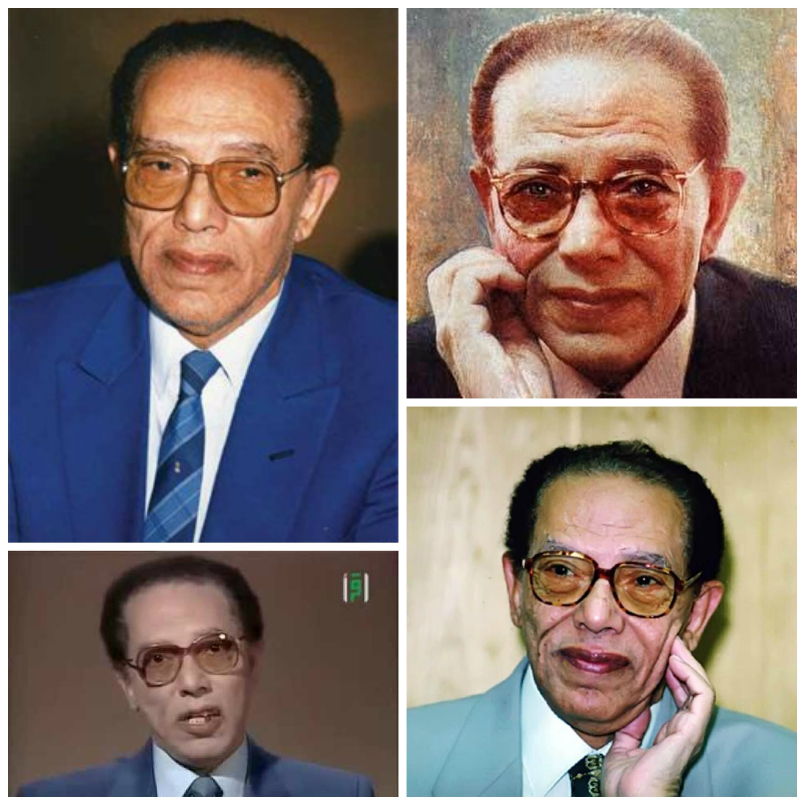
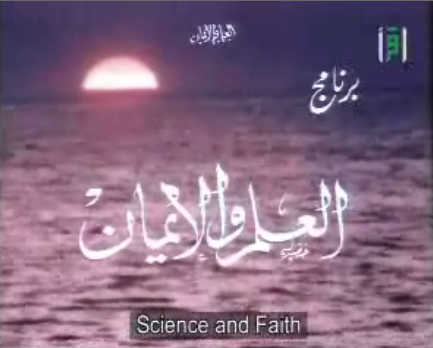

مصطفى محمود
مصطفى محمود، فيلسوف وطبيب وكاتب مصري.
هو مصطفى كمال محمود حسين آل محفوظ، من الأشراف وينتهي نسبه إلى علي زين العابدين. توفي والده عام 1939 بعد سنوات من الشلل، درس الطب وتخرج عام 1953 وتخصَّص في الأمراض الصدرية، ولكنه تفرغ للكتابة والبحث عام 1960. ويكيبيديا
الميلاد: ٢٥ ديسمبر، ١٩٢١، شبين الكوم
الوفاة: ٣١ أكتوبر، ٢٠٠٩، الجيزة
الابناء: أمل مصطفى محمود، أدهم مصطفى محمود

العروض التلفزيونية
برنامج العلم والايمان هو برنامج تلفزيوني قدمه الراحل د. مصطفى محمود لثماني عشرة سنة في التلفزيون المصري، وكان يهدف إلى تناول العلم علي الاسس الايمانية، البرنامج وصل إلى درجة كبيرة من الشهرة وقدم الدكتور مصطفى محمود أكثر من 400 حلقة على مدار ثمانية عشرة سنة. وقد استطاع الدكتور مصطفى محمود من خلاله ان يمزج بين عجائب وغرائب وقدرات هذا الكون العجيب الذي نعيش فيه وبين الايمان بوجود الله سبحانه وتعالى وقدرته على تغيير الأشياء وعلى جعل خلقه جميعا يتأملون فيما قدره سبحانه وتعالى. وقد تناول الدكتور مصطفى محمود العديد من المواضيع التي تجعل الأنسان يقف متحيراً امام الغرائب والعجائب التي تناولها. ويكيبيديا